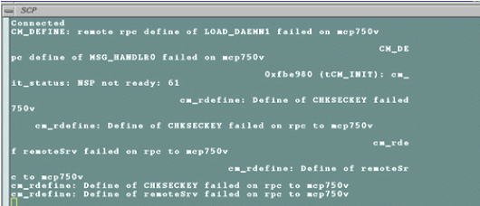
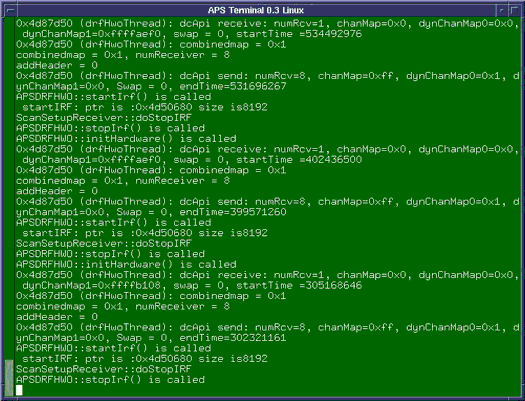
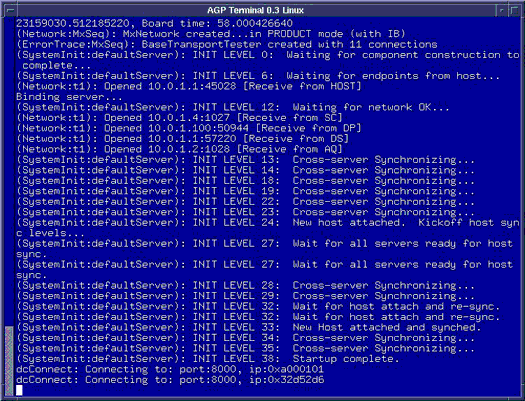
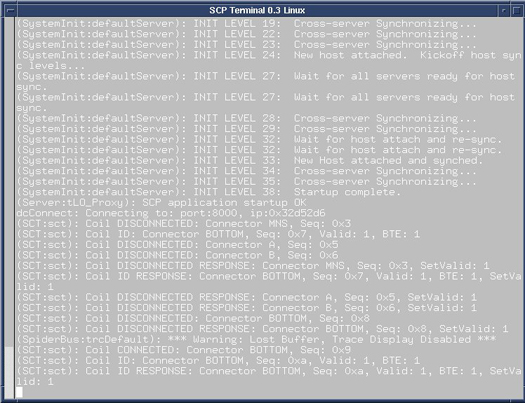

Proprietary to General Electric Company
Direction 5670006, Rev# 1
Discovery MR750w GEM Service Methods
Module Version 1.0, Version Date 4/25/07
Proprietary to General Electric Company |
| Last Updated: | 08/31/2005 |
By connecting directly to the APS, SCP, and AGP, any startup failure can be seen. To view the APS/AGP/SCP outputs, open a C-Shell and type mgd_term. This will open 3 GUI’s which will display the output of each device. A sample of an interconnect failure is shown in Illustration 1.
Illustration 1: RESET FAILURE

For typical output of successful TPS reset for:
APS, see Illustration 2.
AGP, see Illustration 3.
SCP, see Illustration 4.
Illustration 2: Typical output of APS after TPS reset

Illustration 3: Typical output of AGP after TPS reset

Illustration 4: Typical output of SCP after TPS reset

The source of the error can be determined by using the Err No Decoder tool which is accessed from the Common Service Desktop by selecting [Utilities]. Click on [Err No Decoder] and then click the [Start…] button.
The Err No Decoder will prompt: Please enter the error No. (s or q to quit). Enter the error number displayed in the APS window without the leading zero. Press <Enter>and the utility will return a description of the error.
Type s or q and then press <Enter> to exit the Err No. Decoder program.
Other TPS reset failures may not cause a TPS startup failure in the APS window. These types of failures may cause a window to “hang” or the window may display a different type of error message. The example shown below was caused by an Ethernet communication problem. The CPU window hangs while the APS window displays the following:
Attaching network interface vd0…
Failure, can’t load boot file!